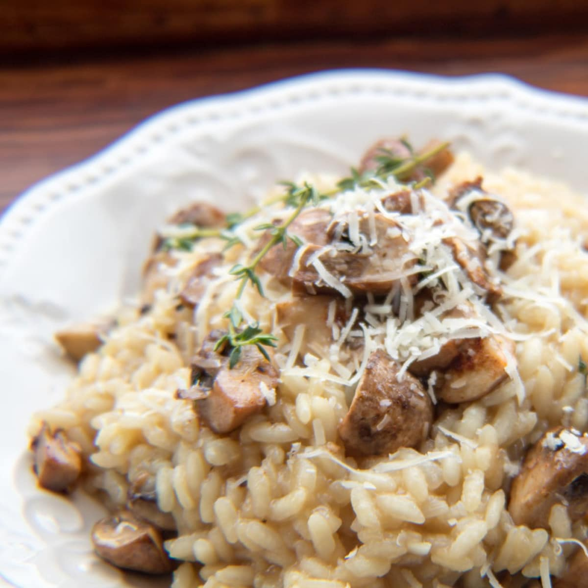

Risotto

Description:
Risotto is like a high maintenance partner -
it requires constant attention
and care,
but in the end, it's totally worth it!
Ingredients:
- 1 1/2 cups Arborio rice
- 4 cups chicken or vegetable broth
- 1/2 cup white wine
- 1 onion, chopped
- 2 cloves garlic, minced
- 3 tablespoons unsalted butter
- 1/2 cup freshly grated Parmesan cheese
- 1 tablespoon olive oil
- Salt and pepper to taste
Instructions:
- In a large saucepan, bring the broth to a simmer and
keep it warm over low heat.
- In a separate large, heavy-bottomed pot, heat the olive oil
over medium heat. Add the chopped onion and minced garlic
and sauté until the onion is translucent, about 5 minutes.
- Add the Arborio rice to the pot and stir to coat with the
onion and garlic mixture. Toast the rice, stirring
constantly, for 1-2 minutes until it starts to turn
slightly golden in color.
- Add the white wine to the pot and stir until it is
absorbed by the rice.
- Begin adding the warm broth to the pot, about 1/2 cup at a
time, stirring constantly until each addition is
absorbed by the rice. Continue adding broth
and stirring until the rice is tender and creamy,
but still slightly firm in the center.
This should take about 18-20 minutes.
- Stir in the unsalted butter and grated Parmesan
cheese until well combined. Season with salt and pepper to taste.
- Remove the pot from heat and let the risotto rest for a
few minutes before serving. The risotto should be creamy and loose,
but not too runny. If it seems too thick, you can add a little more
broth or water to loosen it up.
- Serve the risotto hot, garnished with additional grated Parmesan cheese and chopped
fresh herbs, if desired.